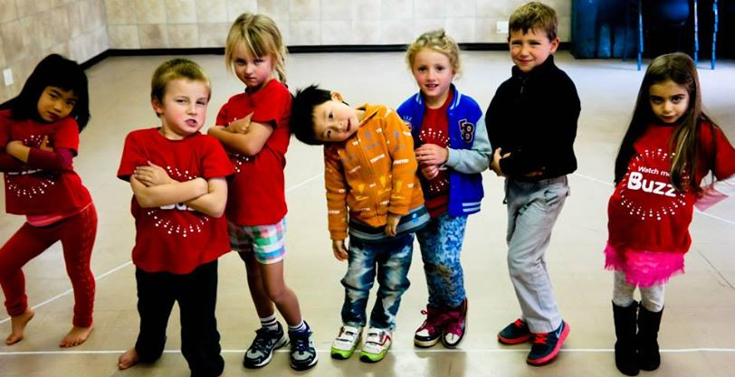
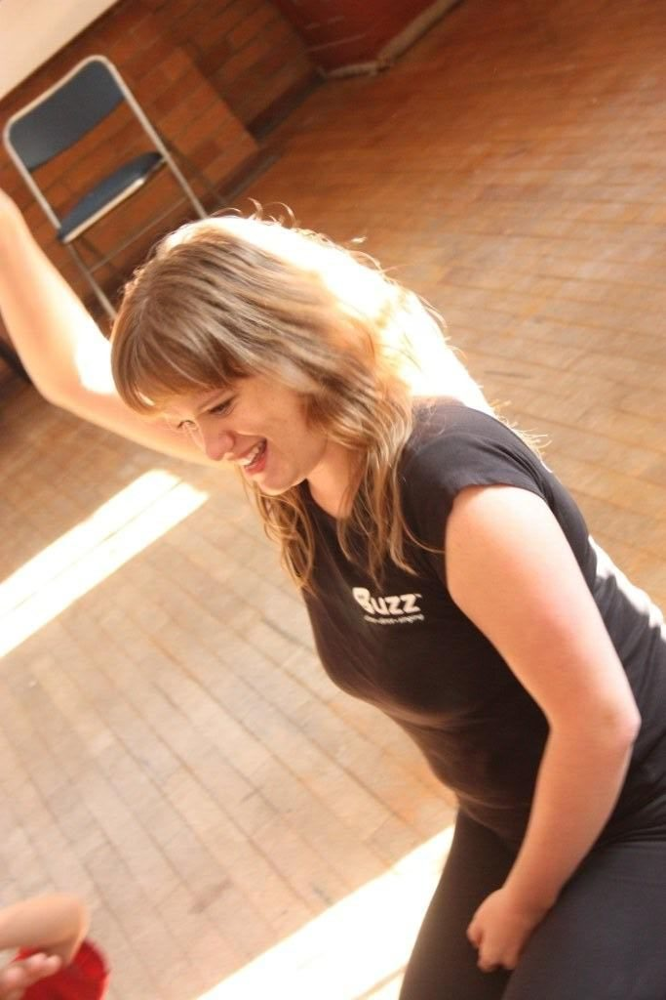
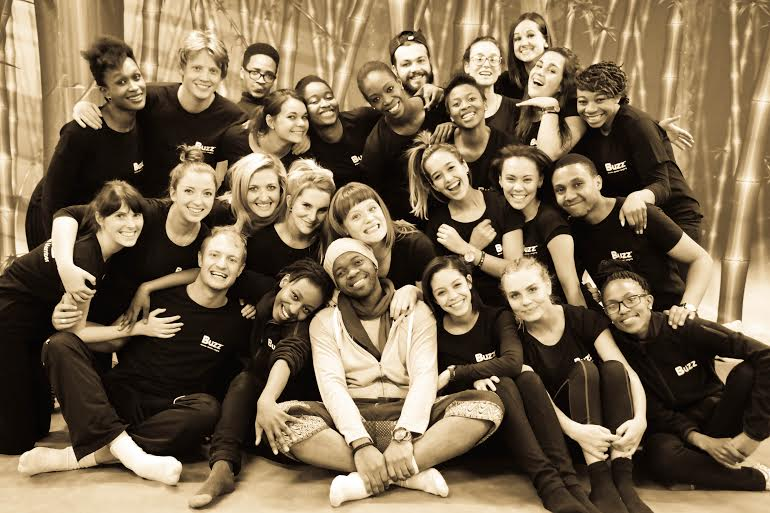
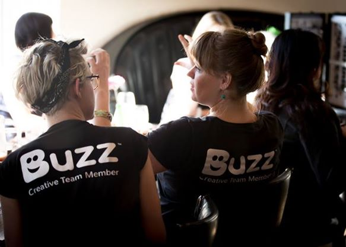
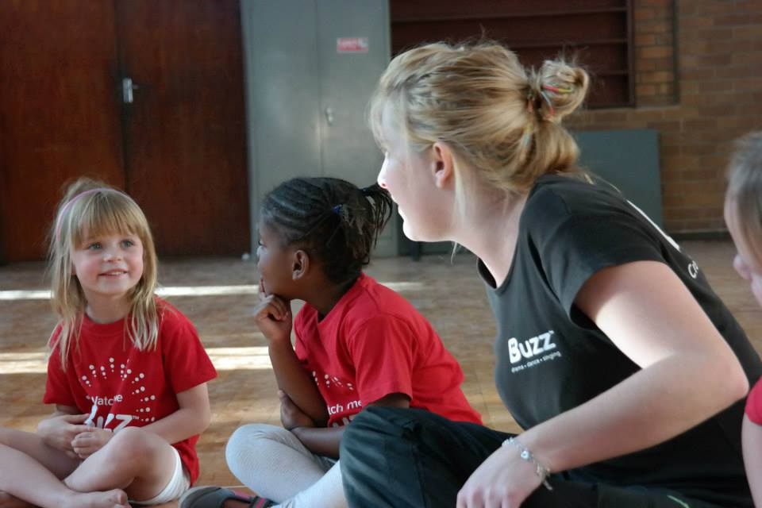
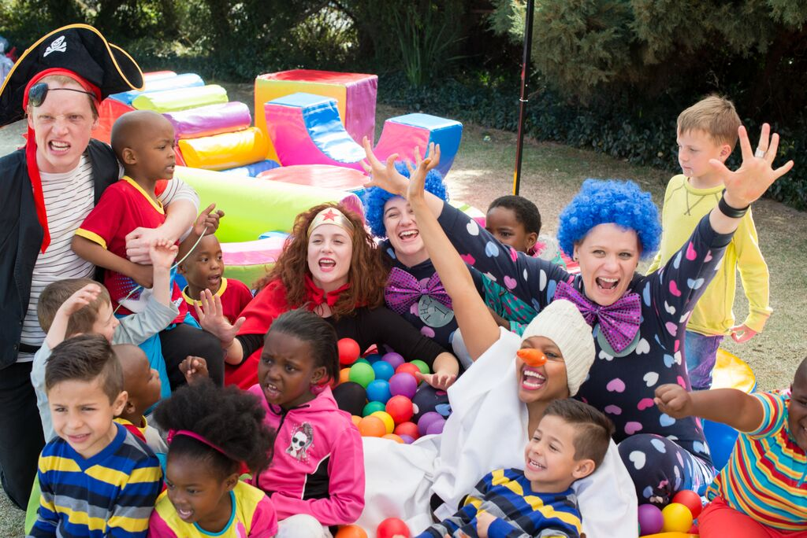

News & Stories
Blogs about children's personality types and so much more!

Picture: Lizette Uys from Buzz Highveld Buzz Kidz in a nutshell What does Buzz Kidz do? I could go into depth and detail but in one sentence: Child development through the arts! In 2022, we were 10 years old and we…
Read More
Statistically: Arts graduates do not make money from their craft Many of us fall in love with the idea of stardom, that big role, the West End, Broadway, Hollywood, Oscars. In reality, the percentage of young artists…
Read More
Adapt or Die Buzz was founded in 2012. We still deliver on the same promise and we still use the same tools; drama, dance and singing for kidz to build confidence, boost social skills, be creative and get buzzing.…
Read MoreI used to drive at every problem, challenge and goal with full force. “Fighting for” what I want, has been my ‘default mode’ for as long as I can remember. I come from a difficult family background and had to work…
Read MoreI am a huge advocate for good old fashioned activities when it comes to kids. I’m the first one to cheerleader for less screen time, more tree time. Less technology more “play-thology.” Less PlayStation, more…
Read More
Having worked exclusively with children since 2006 with the focus of child development through the Creative Arts, I have identified 5 stock personality types in kids. I acknowledge that there will be many more and…
Read More
Why were the ‘The Beatles’ so great? Malcolm Gladwell, in his superb book, ‘Outliers – The Story of Success‘ takes his readers on a wonderful journey, analyzing where talents meets effort to achieve success. In it,…
Read More
At the heart of my organization, I aim to tell stories. Stories that will interest, amuse and stimulate creativity in children. Stories that are educational and fun. The creative process of creating this for little…
Read MoreI run a creative arts organization for children. Many people make the, understandable, mistake that we are a “stage school” or a “performing arts academy,” and although these traditional institutions are valuable in…
Read More
I graduated from University in 2005 and ever since everything that I have engaged with professionally, has involved children of a Pre-Primary and Primary School age. I have taught thousands of kids, with my very…
Read More
Teaching is a creative profession, not a delivery system. Great teachers do pass on information, but what great teachers also do is mentor, stimulate, provoke, engage. – Sir Ken Robinson It is widely recognized in…
Read MoreAsk anyone who knows me. I am a big personality. I make sure people know that I am around. I ask questions, I contribute opinions and ideas but most of all; I ask for support. I put myself through university cent by…
Read More
I hold a degree from The University of Cape Town in Theatre and Performance (Hons.) I have never been trained in business but have managed to grow a strong organization since 2012. I would like to impart a few humble…
Read More
I lived in London in the UK for many years. I was in my mid twenties, often broke and regularly depressed. I was hustling in the big grey city. I was trying my little heart out to make some money to survive, make…
Read More
Think back to your own birthday parties as a child. Up to quite late in Primary School, you probably remember very little today. Try. Try very hard and then when you get a blurry memory into the faintest focus, try…
Read More
A block mounted version of the featured image of this blog, a vintage travel poster circa 1935, hangs on a wall in my house. I was raised, schooled and went to University in Cape Town, but I would choose…
Read MoreSome of us are introverted and others extroverted. Some quiet, others loud. Some are reserved and others are outspoken. There are many spectrums, scales and theories with endless possibilities in between to prove…
Read MoreMost of us use social media. If it is not Facebook, then Twitter, Instagram, emails, texts or Whatsapp keep us in touch with our friends and family, update us on news and events as well as advertise to us. We are…
Read MoreNowadays everything costs money. More than it cost yesterday. Tomorrow it will probably be more expensive. Many, many things that we need for our very survival just eat away at our pockets. Much we spend our money…
Read MoreI founded an organization that offers interactive creative arts workshops for young children. I use themes like “Under the Sea,” “Outer Space” and “Around the World” as a framework for activities, engaging children’s…
Read More